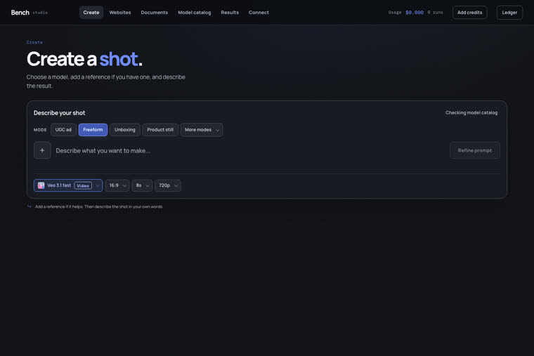

Deja de alquilar el wrapper. Ten la capa creativa.
37 rutas de imagen y video, refinamiento de prompts editable, archivo local de resultados y un ledger de costos reales — todo funcionando en tu máquina, con las claves del lado del servidor.
Un estudio que puedes inspeccionar, modificar y llevar contigo
La mayoría de los productos creativos de IA combinan acceso a modelos, refinamiento de prompts, enrutamiento, almacenamiento y facturación — y esconden las costuras detrás de una suscripción. Bench conserva la comodidad y deja cada costura a la vista. No es dueño de los modelos; te da la capa portátil que conecta ideas, herramientas, proveedores, archivos y costos.
🎛️ Controles que vienen del modelo
Cada endpoint acepta entradas diferentes (una imagen, una lista, un fotograma inicial, ninguna). El registro curado describe el contrato de cada ruta y la interfaz muestra solo los controles que realmente existen.
💸 Costo antes y después
Estimación de preflight basada en la unidad de precio del modelo y los parámetros solicitados; después, el monto cobrado cuando el proveedor devuelve un recibo suficiente. Los valores estimados, medidos y registrados son distintos: no son lo mismo.
🗄️ Tus archivos, tu máquina
Resultados reflejados en el disco y metadatos en SQLite local (data/bench.db). El navegador nunca recibe secretos del proveedor: quien guarda la clave es el servicio loopback.
Cómo funciona
De la idea al recibo, en un solo flujo
La interfaz de React y el servidor MCP se comunican con la misma API local. Esta valida el payload específico del modelo, guarda las credenciales, transmite el progreso, guarda copias de los artefactos y registra los metadatos duraderos.
Tu idea→UI React o agente vía MCP→API loopback→Prompt refinado (editable)→Enrutador por capacidad→Estimación + aprobación→fal.ai→Espejo local + ledger
🧠 Refinamiento visible
Bench agrega la estructura que el modelo elegido suele entender y te muestra el borrador reescrito. Lo editas o lo rechazas antes de gastar. Sin GOOGLE_API_KEY, el prompt original se envía directamente y la interfaz avisa que el refinamiento está desactivado.
🧭 Descubrimiento ≠ producción
El catálogo del proveedor se convierte en una instantánea de descubrimiento con evidencia del esquema y el precio. Solo después de revisarlo, el modelo se incorpora al registro curado. Esto evita que un modelo nuevo, renombrado o mal especificado rompa silenciosamente un flujo de pago.
🔌 Misma capacidad vía agente
El servidor MCP expone once herramientas: descubrir modelos, inspeccionar contratos, cargar referencias, generar imágenes y videos, consultar resultados, vistas previas y gastos, crear y dar seguimiento a proyectos de sitios web y documentos, y buscar los artefactos.
Requisitos previos
Qué necesitas en la máquina
Es una herramienta local para un solo usuario; no es un servidor alojado. Lo esencial es Node reciente y una clave de fal.ai; lo demás es opcional y desactiva funcionalidades específicas.
Node.js 22.5+
Node 24 es lo recomendado, porque Bench usa node:sqlite. También necesitas npm.
node -v# v22.5 o superior
Clave de fal.ai
Obligatoria para generar imágenes y videos. La clave de Google es opcional y solo sirve para refinar prompts.
# ~/.env (nunca en el repo)FAL_KEY=<sua-chave-fal>GOOGLE_API_KEY=<opcional>
Google Chrome
Se usa para imprimir los PDF y para el preflight visual de overflow. Opcional: una instalación de Codex con sesión iniciada, para las builds de sitios y documentos.
google-chrome --version
Guía de uso · paso a paso
En marcha en tres minutos
Comandos reales del proyecto. Esta es la distribución pública sanitizada: llega sin historial de generación, cargas, base de datos privada, rutas personales ni credenciales — tu archivo empieza vacío.
Un comando inicia la API local y la interfaz web juntas. Abre http://localhost:5200. La API está en http://localhost:8787 y el resumen del estado/capacidad en /api/health.
npm run dev# estudio en :5200, API en :8787# si los puertos están ocupados:PORT=8790 BENCH_API_PORT=8790 BENCH_WEB_PORT=5201 npm run dev
4
Crear: imagen y video
En la pestaña Create, elige la ruta, adjunta las referencias que acepta ese modelo, revisa el borrador del prompt y el cálculo estimado, y aprueba. El resultado aparece inline y se guarda en el archivo local con el prompt enviado, el modelo, la URL del proveedor, el archivo local y el costo registrado.
# actualizar el roster curado y los contratos de entradanpm run registrynpm run capabilities# actualizar el descubrimiento y la evidencia de precios del proveedornpm run catalog:sync
5
Sitios y documentos
Websites genera sitios estáticos originales con código fuente editable, vista previa local y bundle para descargar. Documents genera PDF diseñados a partir de un HTML editable, impresos con Chromium, con preflight de overflow. El sitio y el documento pueden invocar un agente de código autenticado localmente; revisa el código fuente antes de publicar.
6
Conectar Claude, Codex o Cursor
Abre Connect, elige el cliente y copia la configuración generada — Bench inserta la ruta absoluta correcta de la máquina actual (el repositorio no incluye el home de nadie). La skill en integrations/skills/bench-studio/ aporta el criterio y el flujo; MCP aporta la ejecución.
npm run mcp# servidor MCP en stdionpm run test:mcp# prueba rápida de descubrimiento y medios
7
Verifica antes de confiar
La puerta de release cubre el build de producción, los contratos de API y de base de datos, el descubrimiento MCP, los recorridos en el navegador, la accesibilidad, la contención responsiva, los estados de error, las transiciones de modelo y las capturas visuales.
npm run test:contracts# API, persistencia y contratos de modelosnpm run test:e2e# recorridos del navegador + accesibilidadnpm run test:release# la puerta completa
8
Saber dónde están tus datos
El repositorio comienza sin data/; Bench lo crea en la primera ejecución. Todo el directorio está excluido de Git. Borrar un resultado elimina el registro de la base de datos y los archivos espejados — no promete borrar las copias que conserve un proveedor externo.
data/
├── bench.db # generaciones, assets, gasto y proyectos
├── inputs/ # cargas espejadas
├── outputs/ # generaciones espejadas
├── previews/ # pósteres de video locales
└── projects/ # fuente de sitios y documentos
Ejemplos
La interfaz por dentro
Las dos pantallas principales: donde creas y el catálogo del que salen las rutas.

Create — referencias conscientes del modelo, controles, borrador de prompt editable, cotización, progreso y resultado integrado.Catálogo — rutas curadas de texto→imagen, edición de imagen, texto→video, imagen→video y video por referencia.
Límites honestos
Qué es Bench y qué no promete
Vale la pena leerlo antes de adoptar: son los límites declarados por el propio proyecto.
Alcance
Herramienta local para un solo usuarioNo es un SaaS multi-tenant alojado. La API se inicia en loopback de forma predeterminada; no la expongas públicamente sin autenticación y un modelo de amenazas deliberado.
Catálogo
La curaduría es intencionalEstar en el catálogo del proveedor no garantiza la admisión en producción. La disponibilidad y el precio pueden cambiar después de una sincronización.
Fidelidad
Entrada aceptada ≠ resultado fielBench registra lo que se envió. No afirma que una referencia adjunta haya influido en el resultado solo porque la API aceptó el campo: sigue siendo necesaria la revisión humana.
Resultados
Sitio estático, PDF vía ChromeLa salida de sitios es estática por diseño, y la creación de PDF depende de una instalación local de Chrome.
Costo
Tener la capa es mantener softwareLas estimaciones no son garantías, y ser dueño de la capa portátil significa mantener una pequeña pieza de software.